Рутинные операции ИП (ежемесячно) с использованием infakt.pl
Disclaimer: подразумевается, что список активностей ИП-шника по учету деятельности на Ryczałt включает следующие типичные операции
- выставление 1 или нескольких фактур (инвойсов)
- оплата налогов
- составление декларации ZUS DRA и оплата взносов в ZUS
- получение оплаты и учет курсовых разниц
Данный документ описывает шаги в программе infakt.pl, необходимые для выполнения операций из списка выше. Вы должны уже знать свою ставку Ryczałt (обычно это 12% для программистов, 15% для прожект менеджеров, 8.5% для мануальных тестировщиков), перед тем как начинать вести деятельность, выясните Вашу ставку в компетентных органах (тут ссылка на статью про выбор ставки?).
Вот тут можно посмотреть минимальную настройку для infakt.pl
Выставление фактуры
В последний день месяца (если у вас с заказчиком договоренность на помесячную оплату), или по факту выполнения (отгрузки) работ необходимо сгенерировать и выставить фактуру заказчику. Для этого перейдите в раздел Przychody -> Faktury и нажать кнопку Nowa faktura (dawny rachunek).
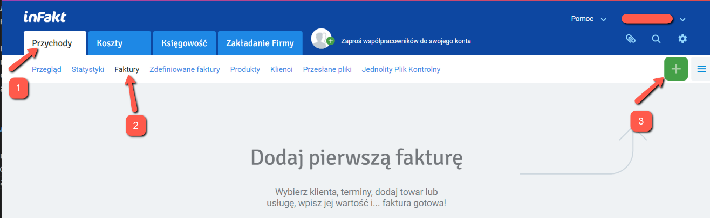
То же самое можно получить из списка контрагентов:
Przychody -> Klienti -> Nowa faktura
для выбранного заказчика, либо из списка услуг:
Przychody -> Produkty, чекнуть нужную услугу, и выбрать Nowa faktura, выбираем Faktura VAT.
В новой фактуре выбираем/корректируем необходимые поля (если не выбрано):
- заказчика (из списка)
- дату оказания услуги (последний день месяца либо дату фактической услуги, если они нерегулярны)
- номер банковского счета (если больше одного)
- услугу
- количество "услуги" (если почасовая, то кол-во отработанных часов, если фиксированная ставка, то оставляем 1, так как сумма нетто уже есть ставка)
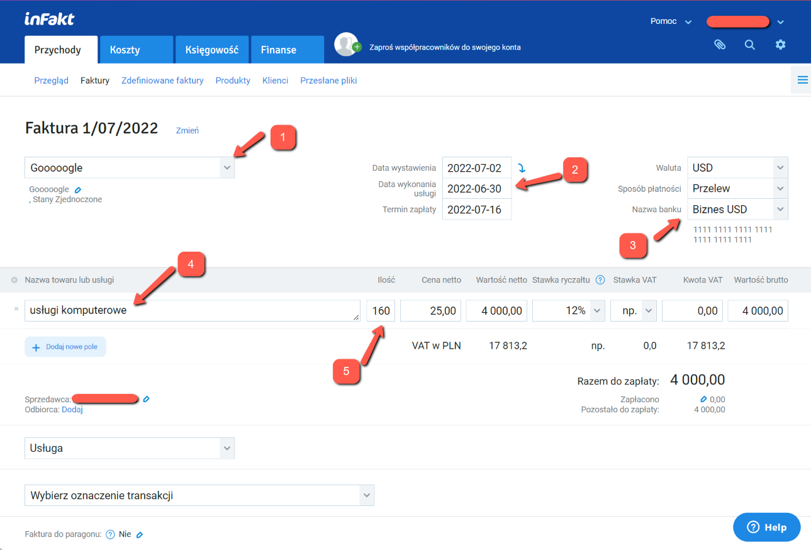
Нажимаете кнопку Zapisz fakturę для сохранения данных. Фактура записана!
Важно: На этом этапе фактура еще не участвует в расчете налоговой базы за выбранный месяц (пока она находится в статусе
SZKIC). Для того чтобы фактура попала в зачет, необходимо ее напечатать или выслать клиенту.
Для этого нужно в списке фактур выбрать нужную фактуру, и выбрать Drukuj либо Wyślij e-mailem. Правда в этом случае нет возможности выбрать язык фактуры (TODO: возможно какая-то настройка на это влияет).
Для возможности выбора языка фактуры надо открыть саму фактуру (щелкнув на нее), и оттуда выбрать Drukuj fakturę.
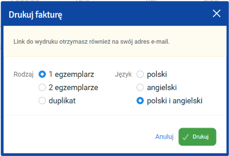
Ссылка на фактуру придет на почту и сама PDF откроется в новом окне.
После печати статус фактуры сменяется на WYDRUKOWANO и она начинает считаться в налог на следующий месяц и в ZUS.
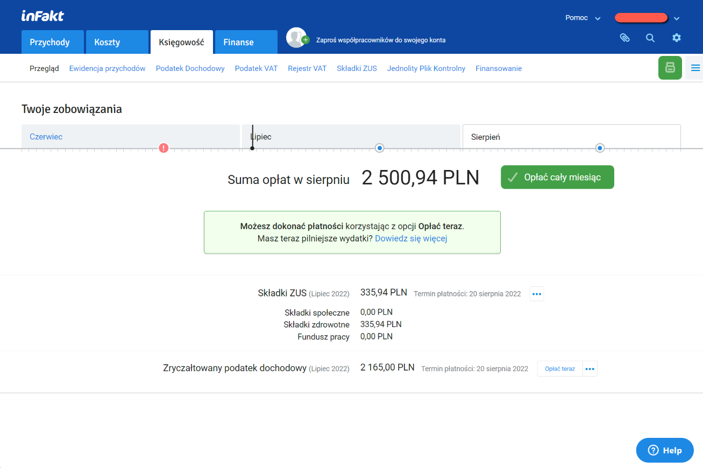
Оплата налогов
Убедитесь что все фактуры добавлены и в статусе
WYDRUKOWANOилиWYSŁANO, а так же все курсовые разницы за отчетный период внесены и учтены.
(Подразумевается что вы знаете номер своего налогового счета. См тут. Infakt получает номер счета автоматически при настройке)
До 20го числа каждого месяца (по состоянию на июль 2022) необходимо оплатить налог. В infakt в разделе Księgowość -> Przegląd отображает сумму для уплаты в текущем месяце исходя из выставленных фактур и внесенных курсовых разниц.
Есть два варианта оплаты:
- вручную - из своего банковского приложения
- с помощью infakt
Вторая опция платная, стоимость зависит от суммы оплаты (что-то в районе 3-5 зл сам налог). Однако она самая простая и удобная, необходимо просто нажать Opłać z inFakt и завершить платеж с помощью интересующих способов оплаты.
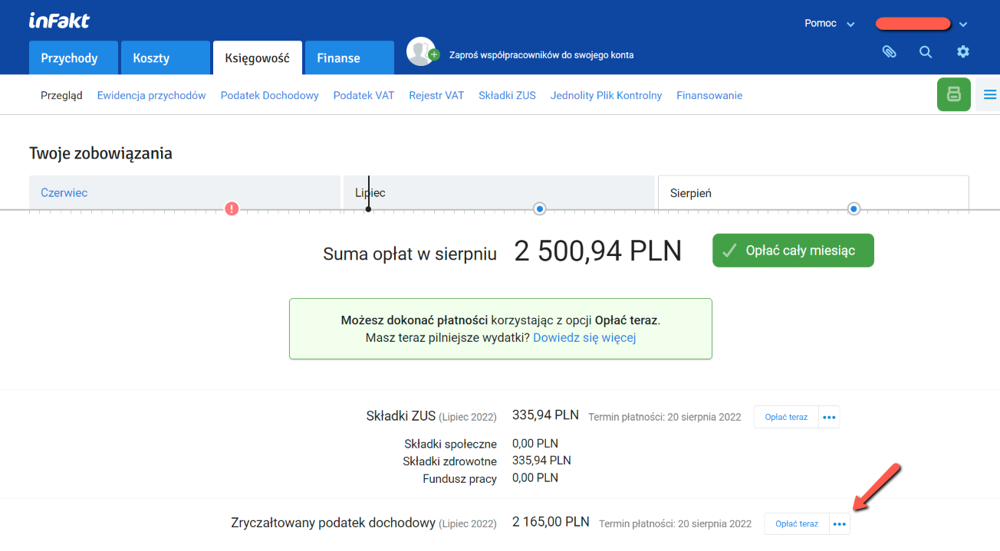
Оплата вручную происходит в банковском приложении.
На примере PKO: Выполните Przelew Podatkowy
- выберите секцию
Pozostałe - вводите в поиске
PPE - введите номер своего налогового счета
- введите за какой период оплачивается налог
- выберите в списке Typ identyfikatora
NIP - введите свой номер NIP
Выберите счет с которого платить (имеет смысл платить с фирмового, так как в банках движение по счету может быть условием бесплатности пакета), введите сумму платежа со страницы infakt и совершите платеж.
По окончанию отметьте налог как оплаченный.
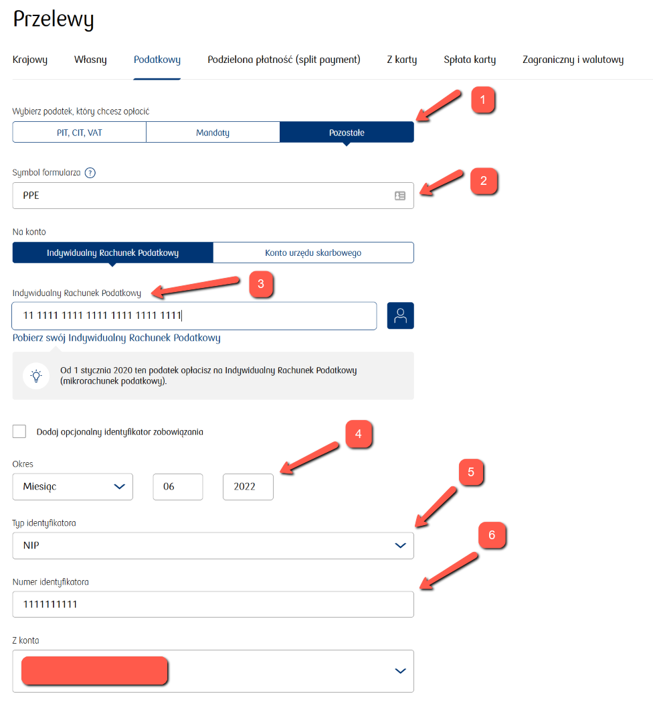
Составление декларации ZUS DRA и оплата взносов в ZUS
(Подразумевается что вы знаете номер своего микросчета ZUS. См детали как настроить тут)
До 20го числа каждого месяца (по состоянию на июль 2022) необходимо оплатить складку ZUS и отправить декларацию. Как и в случае с налогами, есть те же две опции для оплаты. Для платежей в ZUS комиссия infakt немного меньше (1-2 зл).
Для оплаты напрямую через приложение банка необходимо выполнить Przelew Krajowy, выбрать счет, с которого оплачивать (как писал выше, имеет смысл платить с фирмового):
- ввести получателя
- ввести номер своего микросчета ZUS
- Tytul указать "SKLADKA ZUS 22M06" (пометить период, за который осуществляется платеж)
Ввести сумму со странички infakt и совершить платеж.
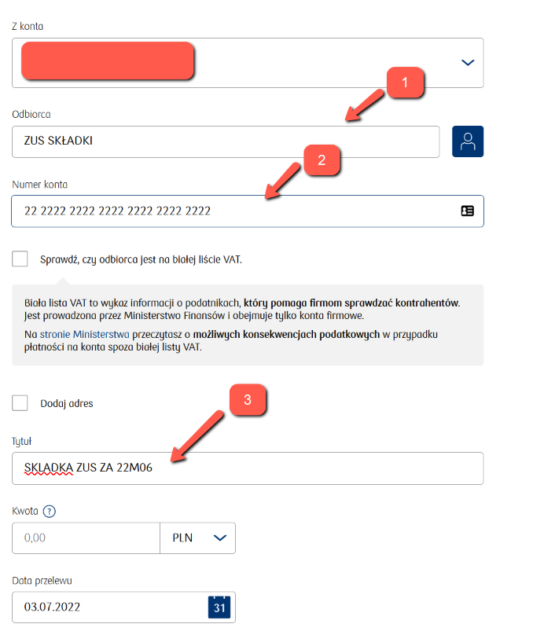
По окончанию отметьте складку как оплаченную.
Для генерации декларации ZUS(файла ZUS DRA) пройдите к нужной складке в списке складок (Przejdź do składki).
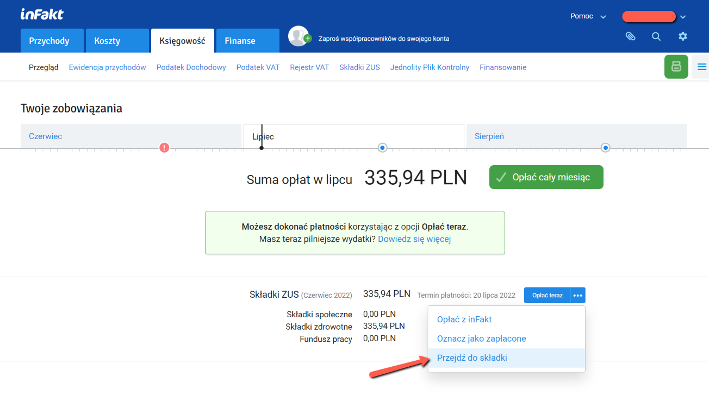
- Имеет смысл (для истории) прикрепить чек оплаты ZUS к записи в infakt (
Dodaj załącznik) - Нажмите
Pobierz ZUS DRAчтобы скачать файл DRA
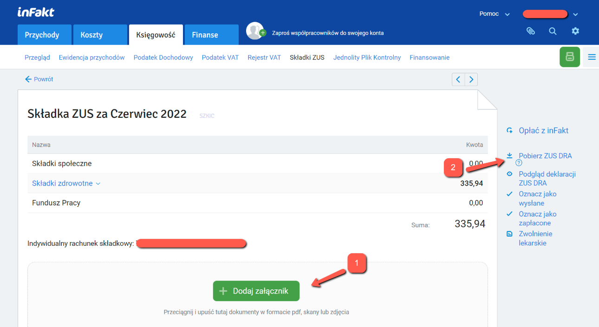
Скачанный файл можно импортировать на портале ZUS. Альтернативно, можно создать такую же декларацию руками, но импорт файла немного быстрее.
Для импорта файла нужно зайти на портал ZUS, перейти на закладку ePłatnik в раздел Dokumenty и там выбрать Import KEDU
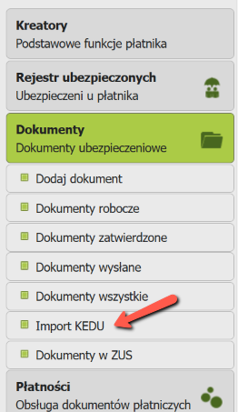
Проходим Dalej до шага 2 (Wybór pliku do importu i generacja dokumentów synchronizujących), нажимаем Wybierz plik... и выберите скачаный файл, и переходим на шаг 3 (Utworzenie i walidacja dokumentów).
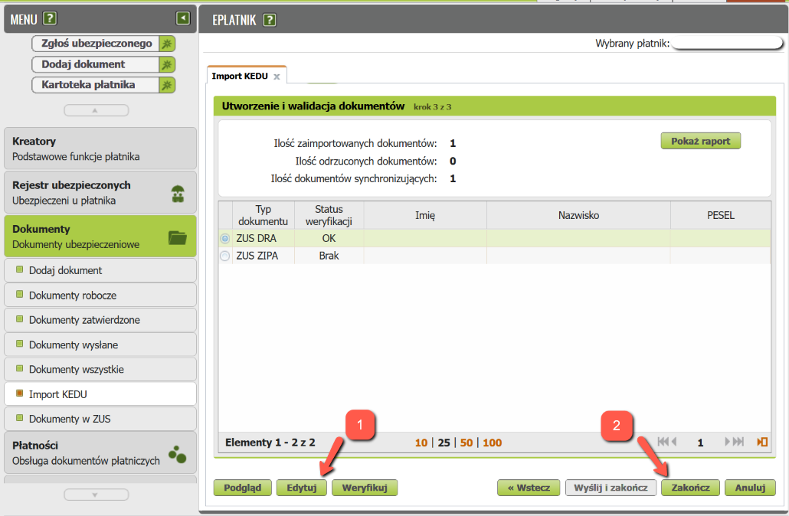
По какой-то причине кнопка Veryfikuj не обновляет статус документов и показывает ошибку, так что можно
- выбрать DRA и нажать
Edytuj, в открывшемся окне нажатьSprawdźдля валидации и вывода отчета. Чаще всего все будет все хорошо и можно закрыть редактор без изменений. - нажать
Zakończчтобы сохранить документы в папкуDokumenty robocze.
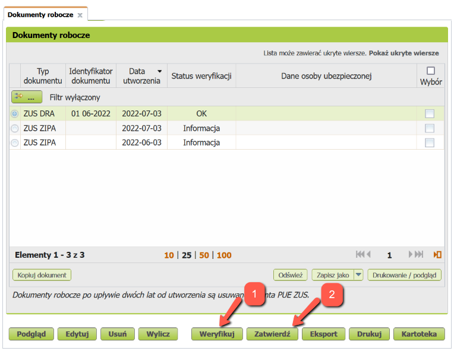
- Если по какой-то причине статут документа не OK - нажмите
Weryfikuj - Если статус документа OK - нажмите
Zatwierdź
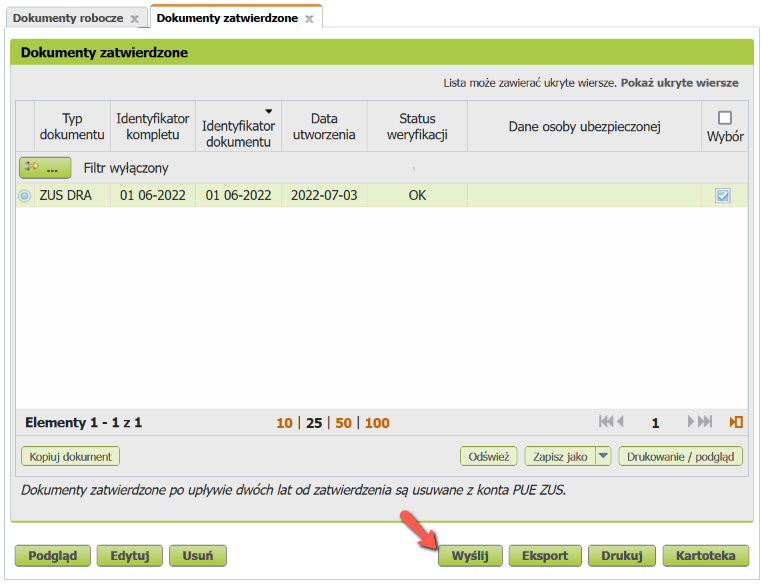
Нажимаем Wyślij, подписываем документ (например, profilem zaufanym ePUAP) и на этом все. Документ должен появиться в папке Dokumenty wysłane.
Получение оплаты и учет курсовых разниц
При получении оплаты в иностранной валюте могут возникать курсовые разницы. Закон предписывает учитывать курсовые разницы. Учитывать ли только положительные разницы или и отрицательные тоже - мнения расходятся. Сам infakt.pl советует вносить как положительную, так и отрицательную курсовую разницу. Тут стоит каждому для себя решить какие разницы учитывать.
Для учета курсовых разниц нужно знать курс (К1), по которому выставлена фактура, и курс нацбанка Польши (К2) на последний рабочий день, предшествующий дате поступления оплаты. Если валюта в фирмового счета переводится позже, то в момент продажи валюты или перечисления ее на личный счет может возникать еще один курс (К3). Он, как и в случае с поступлением оплаты, считается на предыдущий рабочий день от даты перевода или продажи. Вот тут и тут есть калькуляторы курсовых разниц, если лень самому считать.
Для внесения курсовой разницы (K2 != K1, или K3 != K2), необходимо добавить Dowód wewnętrzny. Для этого переходим в Przychody -> Faktury, и там:
- кликаем по "бургер-кнопке"
- выбираем
Dowód wewnętrzny
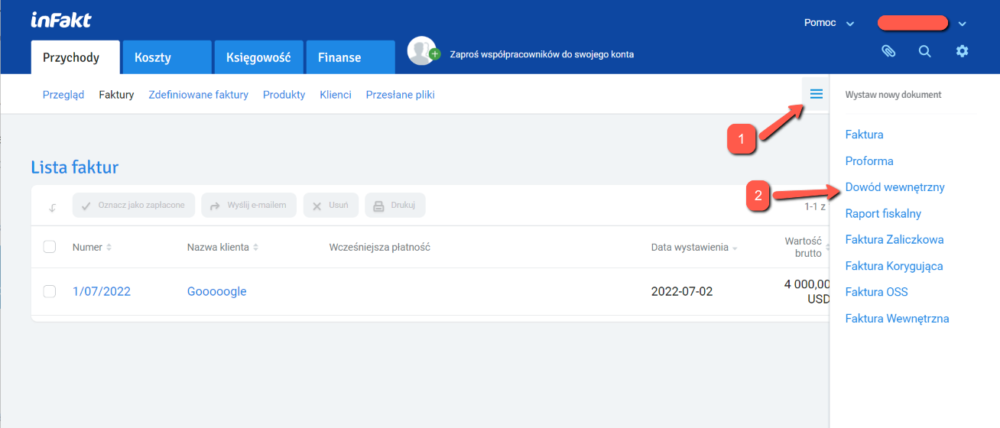
Тут выбираем:
Pozostałe przychody- вписываем
dodatnia różnica kursowaилиujemna różnica kursowaв зависимости от курсовой разницы - вводим сумму курсовой разницы (со знаком минус если она отрицательная)
- опционально можно добавить детали по курсам, которые считали
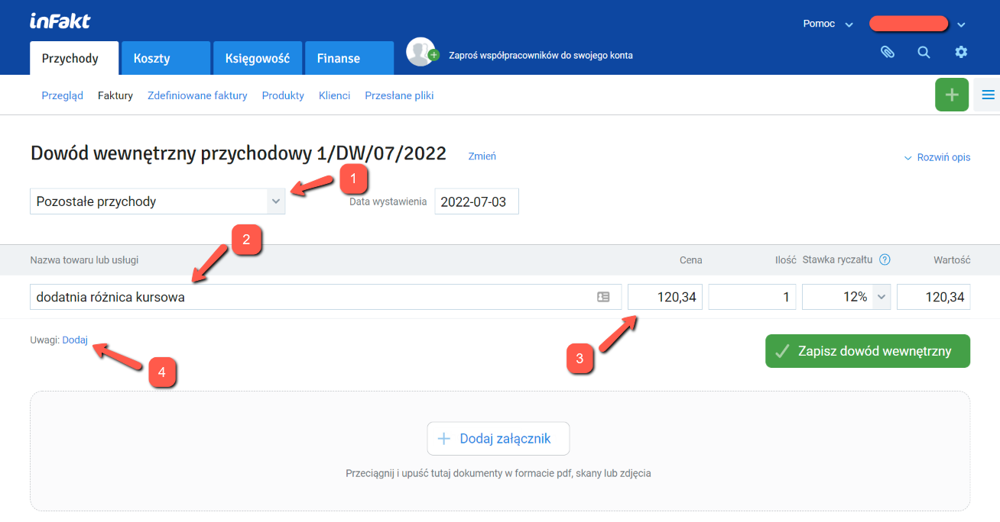
Записываем изменения и документ сразу начинает участвовать в расчете налоговой базы.